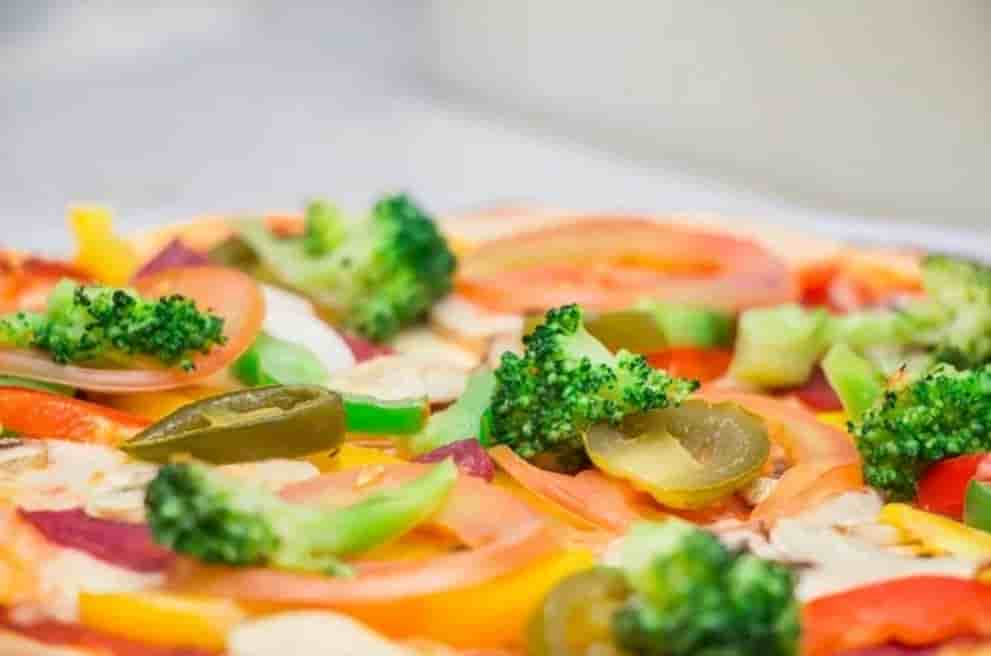

Потеря веса не сводится к сокращению количества еды. Главное, есть больше правильной пищи и меньше неправильной. Не нужно жить с чувством голода и пустым желудком. Наоборот, если вы лишаете себя пищи, это может нанести вред вашему телу, и вы, скорее всего, снова наберете вес.
Важно есть продукты, которые могут помочь сбросить вес, наполняя желудок, но не наполняя калориями, а также есть продукты, которые могут увеличить скорость метаболизма, что помогает сжигать жир быстрее. Наилучший вариант - не перегружать себя одной едой для сжигания жира, а придерживаться сбалансированной и разнообразной диеты, состоящей из множества продуктов, которые могут помочь похудеть. Добавьте в свой рацион следующие продукты, которые помогут достичь ваших целей по снижению веса ... Итак, что есть, чтобы похудеть? Давайте выясним вместе:
Чечевица имеет высокое содержание белка, поэтому может быть использована в качестве замены мяса в блюдах. Также доказано, что она помогают предотвратить скачки уровня инсулина, которые могут привести к тому, что ваше тело будет накапливать лишний жир.
Лосось является одним из популярных продуктов, которые помогают вам похудеть. Кроме того, что он полезен для вашего сердца, омега-3 жирные кислоты, содержащиеся в лососе, также помогают предотвратить выбросы инсулина и способствуют росту мышц. И чем больше у вас мышечной массы, тем больше калорий и энергии вы будете сжигать.
Исследование показало, что люди, которые ели яблоко в качестве закуски перед едой, потребляли меньше калорий в целом, чем те, кто этого не делал. Яблоки можно использовать в качестве перекуса, они также богаты витаминами и клетчаткой, которая подавит аппетит.
Богатый кальцием, по-настоящему вкусный сыр - превосходный способ разнообразить любое блюдо или салат, добавив небольшое количество калорий. В 100 г сыра моцарелла содержится всего 280 калорий. Женщины, которые едят одну порцию сыра в день, с меньшей вероятностью набирают вес в течение длительного времени.
Маленькие сухофрукты, такие как изюм, легко переесть, но если вы выберете сухофрукты, такие как сушеные манго или сушеные финики, вы с меньшей вероятностью съедите большое количество. Вы можете добавить их в свои фруктовые салаты или съесть их отдельно. Сушеные финики или манго дадут вам ежедневную дозу витамина С, а также железа и витамина А. Кроме того, они удовлетворят ваши пристрастия к сладкому.
Кускус - это низкокалорийная пища, которая быстро вас насытит. В 100 г кускуса содержится всего около 110 калорий. Это отличный источник энергии, который набухает в желудке, поэтому он будет дольше сохранять чувство сытости.
Грейпфрут - еще один отличный продукт, который поможет вам похудеть. Не нужно употреблять только один грейпфрут, чтобы получить необходимый результат. Этот плод содержит фитохимические вещества, которые снижают уровень инсулина и побуждают ваше тело преобразовывать пищу в энергию, а не хранить ее в виде жира.
Если вы привыкли есть маленькую порцию салата перед основными приемами пищи, он наполнит желудок и поможет не переедать во время основного приема пищи. Важно не использовать в салате калорийную заправку. Можно его сбрызнуть оливковым маслом, лимонным соком или бальзамическим уксусом.
Добавление специй к вашей еде может быстро сжечь калории. Чили и аналогичные горячие специи содержат капсаицин, который является химическим веществом, создающим тепло. Это тепло, которое вы чувствуете, вызвано процессом, называемым термогенезом, который сжигает калории, а также выделяет тепло.
Морковь и другие корнеплоды, такие как пастернак, содержат большое количество клетчатки, поэтому они наполняют желудок без калорий.
Сельдерей является почти идеальной диетической пищей, так как вы сжигаете больше калорий, потребляя его, чем вы получаете от его потребления. Добавьте его в свой салат перед едой, и клетчатка из сельдерея поможет заполнить желудок абсолютно без прироста калорий.
Авокадо может не только творить чудеса с вашим телом, вы также можете использовать его в качестве маски для лица, чтобы питать вашу кожу и уменьшить появление морщин. Авокадо содержит много калорий, но наполняет желудок больше, чем многие другие виды пищи, поэтому может стать хорошим дополнением к вашей диете. Авокадо богат полезными жирами, калием, пищевыми волокнами, магнием, железом и витаминами А, В-6 и С.
Свежий шпинат - это способ получить много витаминов и минералов, которые нужны вашему организму, без лишних килограммов. Он содержит витамины С, А, К и В и много антиоксидантов. Одна порция шпината с яйцом - это полноценное блюдо.
Зеленый чай наполнен антиоксидантами и увеличивает ваш метаболизм с каждым разом, когда вы его пьете. Исследование показало, что если вы пьете пять чашек зеленого чая в день, вы можете удвоить потерю веса во время диеты.
Темный шоколад не обезжиренный и не низкокалорийный. Тем не менее, это лучший способ справиться с пристрастием к сладкому. Если вы очень хотите шоколада, вам нужно всего несколько кусочков, чтобы сильный аромат не дал вам съесть слишком много.
Всего четверть чайной ложки корицы в день может помочь снизить уровень холестерина и сахара в крови, а также отразить выбросы инсулина после еды, которые могут заставить ваш организм накапливать калории в виде жира.
Гречка содержит как углеводы, так и белок, что делает вкусной и насыщенной. Выбирайте гречневую крупу, когда не знаете из чего приготовить кашу. В результате вам будет гораздо сложнее переесть.
Добавление в пищу полезных зеленых листовых овощей наполнит вас энергией и даст вам много витаминов и минералов, которые вам нужны. Листья и стебли утолят ваш голод, но содержат, например, только одну седьмую часть калорий, содержащихся в макаронах.
Черника хорошо известна благодаря своей пользе для здоровья, особенно антивозрастным свойствам, благодаря высокому содержанию антиоксидантов. Всего одна порция чашки даст вам 4 г клетчатки, всех витаминов и антиоксидантов, и это только обойдется вам примерно в восемьдесят калорий.
Ешьте здоровый завтрак из овсяных хлопьев. Порция овсяной каши по утрам может заставить вас чувствовать себя сытым весь день. Овес является хорошим источником клетчатки, он также содержит крахмал, который может повысить обмен веществ и помочь вам сбросить килограммы.